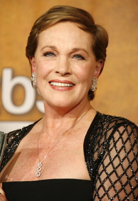

Julie Andrews is an English actress and author, winning numerous accolades for her talent over the years. See her IMDB page for achievements.
Basic Information:
- Date of Birth: October 1, 1935
- Place of Birth: Walton-on-Thames, England
- Job: Actress
Top Three Favorite Movies:
- The Sound of Music
- Mary Poppins
- The Princess Diaries
See a video interview, here.